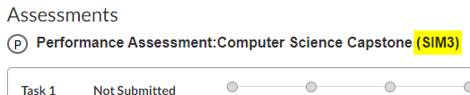

Task 2: The Documentation#
Warning
On 9/25/2023, C964 was updated to a new version (SIM3). Though the rubric and task directions were reworded, the actual requirements and their assessment criteria are unchanged.
Note
The content here for parts A, B, and D aligns with the latest version of the Task 2 template. Following the new template meets all the documentation requirements while being more succinct and clear. We recommend using the template for both SIM2 and SIM3. However, using the previous Task 2 template is still acceptable. Currently, the examples (including most of in the archives) follow the old template.
Task 2 Documentation Template#
After completing the application (part C), write your documentation (parts A, B, and D) following the C964 Task 2 documentation template:
Task 2 documentation template (parts A, B, and D)
Do NOT write an outline!
Most sections must be written in a narrative style with complete sentences and paragraphs. Tables and bullet points are acceptable for sections F1, F2, and G.
Tip
The official rubric and directions were written to map the project’s elements to specific competencies. However, to allow for a broad range of projects its language is necessarily also broad. For more specifics, we recommend referring to the guidelines on this webpage and the Task 2 template.
To gauge the level of detail evaluators typically expect, review these examples:
Example Documents#
The examples found here are of actual passing tasks 1 and 2, flaws and all. To best represent what might be accepted, we’ve made no corrections. See the [excellence archives]((resources:examples:archive) to review better projects.
These examples (and most of those in archives) were written using the previous Task 2 template. In the coming months, we will add more recent examples following the new template.

Also see: Task 1 example A

Also see: Task 1 example B
Pass Task 1.
Finish Task 2 part C.
Data is used to create an ML model.
The user input can provide input and the ML model is applied to that input.
Three images are included.
The code runs without errors.
Write task 2 part D.
Write the User Guide.
Write the machine Learning section.
Write the Validation
Write the remaining part D sections,
Write part B.
Write part A.
Following APA guidelines, check grammar and sources, export as a single pdf, and submit.
Tip
When evaluating a section, the evaluator will check for the fulfillment of the requirements within that section. They don’t assess writing style. It’s not about writing something fun to read -it’s about demonstrating that the requirements are met.
Follow the Task 2 template
Submit parts A, B, and D as a single .pdf file.
Part D is what matters -particularly the Machine Learning, Validation, and User Guide sections. Parts A and B need to be completed but have few qualitative requirements.
FAQ#
What version am I enrolled in? SIM2 or SIM3? Which resources should I use?#
To see which version you are enrolled, go to the ‘Assessments’ section of your C964 COS page: 
For both versions, SIM2 and SIM3, we recommend using the most recent version of the Task 2 template and following the advice on this webpage.
Are there length requirements for the documentation?#
No. What you see in the examples and template are just guidelines. The individual evaluator determines what qualifies as “sufficient detail,” which further varies depending on the project and writing style. If you feel you’ve met the requirements, simply move on to the next section. Upon submission, it will pass, or they will request more details. In the latter case, you can then focus on revising the more narrow scope as directed by the evaluator’s comments, which is generally more efficient than overworking the entire project.
I’ve completed the task 2 documentation. Should I send it to my course instructor for review?#
If you have specific questions or concerns -yes. However, in most cases, it’s best just to submit. What suffices as “sufficient detail” is highly subjective. We can always tell you to add more, but if you’ve done your best to fulfill the requirements, submit it and let them tell you which (if any) parts need revision. At best, it passes; at worst, we address the issues cited by the evaluator -and then it passes. Responding to the more narrow focus of the evaluator’s comments is generally easier than overworking the entire project.
You have unlimited submissions but limited time. And, typically this is the best and most efficient approach.
I only have a Linux or Mac machine. Will evaluators be able to run my code?”#
It is preferable to submit an app which can run on both on Windows and Mac, e.g., Jupyter Notebook, Python project, webpage, etc. The ‘User Guide’ in part D only needs to have instructions for Windows as technically (and unfortunately), we are a “Windows” university,
However, being Windows-compatible is nowhere specifically required in the C964 rubric, and doing so would be a little silly for a computer science program. That said, WGU evaluators are only issued Windows 10 machines, and they may have difficulty running a Linux or Mac app without special instructions. Therefore, for projects that must be run from a non-Windows machine, we recommend that the user guide provide explicit instructions for a Windows 10 user to run your code, such as using a [virtual machine, a remote machine, or using a Linux subsystem.
How many submission attempts am I allowed?#
You have unlimited submissions (as with all WGU performance assessments). Furthermore, a project requiring multiple submissions is not precluded from being given an excellence award. However, do attempt to fully meet each requirement as submissions falling significantly short of the minimum requirements may be locked from further submissions without instructor approval. Moreover, such submissions do not receive meaningful evaluator comments.
My task two was returned for sources stating:#
“In-text citations could not be found for portions of the task that have been quoted or paraphrased…”
What does this comment mean?
It indicates they could not find a matching in-text citation for every source on your reference list. Check that each reference has a match following APA style, e.g., (Author, year), and remove any references without matches. Use the MS Word Reference Tool to create, manage references, and avoid such errors.
Can I use my C951 task 3? Should I use it?#
You can use anything you’ve written for C964, including copying verbatim from C951 task 3. If it’s convenient, feel free to do it. But at best, the time saved is little. At worst, you might get bogged down trying to work on two projects simultaneously and going with an unnecessarily complex C964 topic.
Here are some points to consider:
C951.3 is just a written project, typically around five pages (I’m guessing; ask your C951 instructor), and can be completed in a single afternoon. Comparatively, C964 requires a working machine learning application and accompanying documentation, typically around 20 pages.
C951.3 only relates to parts A and B of C964.2. These parts are just a framework for communicating the project to a general audience and almost always pass. Furthermore, they’ll have to be at least partially rewritten anyway. Parts C and D of C964 are what evaluators care about, but C951.3 has no corresponding parts C and D.
Rewriting content C951.3 for a different C964 topic will take little additional work.
As it’s just a written project, students often pick a complex topic for C951.3. But then they feel pressured to use the same complex topic for C964 and struggle with creating the app.
Trying to comprehend two projects at once is just more difficult.
Whatever you do for C964 can meet the requirements of C951 task 3. If you have plenty of time, completing C964 first might be a good option.